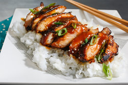

Chicken Teriyaki
Originally from: NYTimes

Ingredients
- 1 cup soy sauce
- 1 cup sugar
- 1 Tbl brown sugar
- 6 cloves garlic
- 2 Tbl grated ginger
- 1 cinnamon stick
- 1 Tbl vinegar
- 2 Tbl cornstarch
- 8 boneless skinless chicken thighs
Directions
- Combine all ingredients except chicken and cornstarch in saucepan.
- Bring to boil, then let simmer a few minutes. Remove from heat and let cool. Discard cinnamon stick and stir in 1/2 cup water.
- Place chicken in ziplock bag, marinate with sauce for 1 hour to overnight.
- Remove chicken and bring sauce to boil, then reduce heat to low. Add cornstarch with 2 Tbl water. Stir until sauce thickens. Add water to sauce to then thin out to desired consistency, and remove from heat.
- Brush chicken with sauce and place under broiler around 5 minutes a side.
Notes
-
2020-12-15 - Made pretty much as above, used ground ginger rather than fresh and did not marinate very long. Original recipe calls for 1 Tbl pineapple juice and less brown sugar, and no vinegar. Turned out pretty well, and seemed better than other baked teriyaki chickens I've done in past.